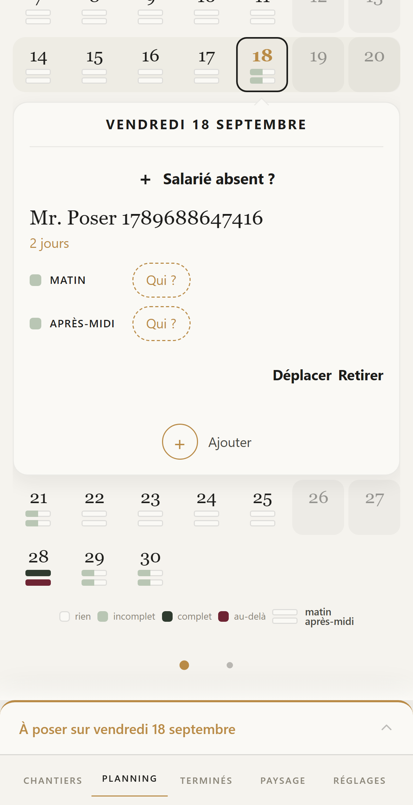

Aujourd’hui — votre application

La proposition
Septembre
Aucun bouton, aucun cadre, aucun aplat. Vos trois réponses du 17 sont là : les trois voies gardent leurs mots et « Ajouter » devient « Fermer » ; « Annuler » à droite de Matin · Après-midi · Journée ; le nom seul pose le client, la date en or au-dessus.
Une chose change par rapport au 17 : « Salarié absent ? » n’est plus en gras, il est en or — comme tout ce qui s’appuie. Le gras et l’or ensemble crieraient.
Matin et après-midi restent comme aujourd’hui — la pastille et le mot en capitales —, c’est votre demande du 18.
« Aujourd’hui », en haut, est une photo de votre application, prise ce soir sur le 18 septembre, pour comparer.
Touchez un nom dans le tiroir, « Ajouter », « Salarié absent ? », un jour.
L’autre planche : planning-tout-ensemble.html. Rien n’est codé.